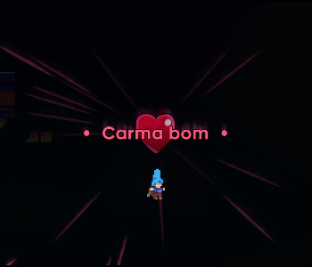
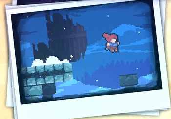
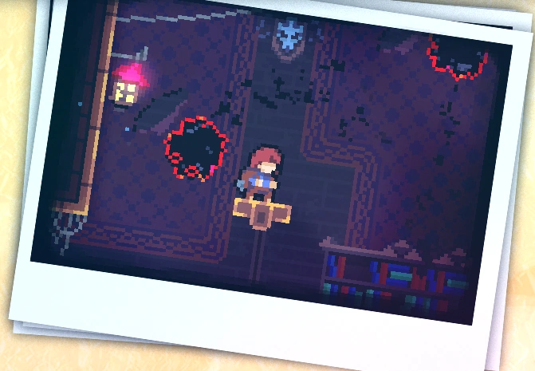
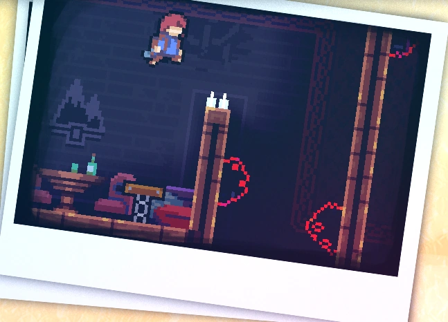
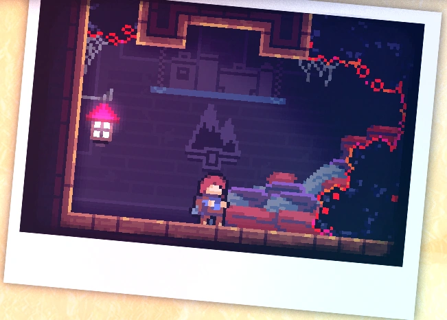

Chapter 3: Celestial Resort - B-Side
Celestial Resort is the third chapter of Celeste. B-Side features a significant increase in difficulty. To unlock, the player must get the cassette tape on A-Side of the respective chapter.
Collectibles
Crystal Heart:
The crystal heart of chapter 3 - B-Side is acquired after completing the chapter.
Strawberries:
• Golden Strawberry:
Obtained after completing the chapter while holding the golden strawberry. It can only be achieved after completing chapter 8 - B-Side.
Subchapters
Celestial Resort - B-Side has 4 subchapters:
Start
Staff Quarters
Library
Rooftop
Secret Island
To reach the secret island, the player needs to go left, and then perform a wavedash, then managing to get past the platform with spikes using a dash, thus arriving at the island. On the island, there is a skull binocular, and using it the player can see another platform to the left with some birds on top. It'ss only possible to reach this island using variants.